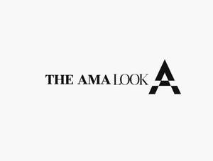

Trade Mark Journal No.2025/043 24 October 2025
UK00004278573 15 October 2025 (9,18,25,28,35)

- Class 9
- Mouth guard, head guard, Protective and safety equipment relating to sport; protective clothing, protective headgear; protective helmets, sports helmets, protective masks, protective gloves; mouth guards; protective helmets, sports helmets and protective gloves; Computer application software for anti-counterfeiting of goods and web based program for anti-counterfeiting of goods, software for verifying authenticity of manufacturers of sporting goods, articles and equipment's; software for verifying authenticity of the goods namely boxing gloves, gloves, gym accessories, sports accessories, protective gears, leather goods, textiles, eatables, watches, luxuries, riding goods products; Tags for identifying electric cables; Tags for identifying electric conductors; Tags for identifying electric wires; Electronic security tags; Electronic tags; Electronic tags for goods.
- Class 18
- Pocket wallets; handbags; travelling bags; cosmetic bags sold empty; sports bags; waist packs; evening bags; gladstone bags; leather bags; leather credit card cases; key pouches; leather purses; leather credit card wallets; holdalls; athletic bags; beach bags; Imitation leather; Crossbody bags; Shoulder bags; Luggage; Travel bags; Briefcases for documents; Clutch bags; Bags for carrying pets; Messenger bags; Diaper bags; Rucksacks for mountaineers; Backpacks [rucksacks]; All purpose sport bags; Leather bags; Umbrellas; Clothing for animals; Collars for pets; Fanny packs.
- Class 25
- Gloves Boxing shoes Boxing shorts Mountaineering gloves Cycling Gloves Fingerless gloves Fingerless gloves as clothing Gloves for apparel Snowboard gloves Gloves [clothing] Gloves as clothing Motorcycle gloves Ski gloves Golf clothing, other than gloves Riding gloves Riding Gloves Sports clothing [other than golf gloves] Winter gloves Gloves for cyclists Knitted gloves Camouflage gloves Driving gloves Mitts [clothing] Boxer shorts Clothing for wear in wrestling games Warm gloves for touchscreen devices Boots for sport Judo uniforms.
- Class 28
- Boxing gloves Gloves (Boxing -) Sparring gloves Karate gloves Gloves for sports Football gloves Baseball gloves Gloves (Baseball -) Hockey gloves Gloves (Fencing -) Fencing gloves Handball gloves Bowling gloves Golfing gloves Softball gloves Boxing rings Lacrosse gloves Billiard gloves Golf gloves Gloves (Golf -) Gloves for golf Swimming gloves Gauntlets [gloves for archery] Batting gloves Punching balls for boxing Windsurfing gloves Punching bags for boxing Gloves for games Punching balls [for boxing practice] Water-skiing gloves Gloves for water-skiing Taekwondo mitts Gloves for American football Racquet ball gloves Batting gloves [accessories for games] Baseball mitts Webbed gloves for swimming Weight lifting gloves Softball mitts Protective face masks for use in the sport of fencing Gloves made specifically for use in playing sports Athletic protective elbow pads for cycling Baseball batting cage nets Fencing gauntlets Gauntlets (Fencing -) Gauntlets [for fencing] Athletic protective wrist pads for cycling Belts for weightlifting Athletic protective elbow pads for skating.
- Class 35
- Online retail and wholesale services connected with the sale of gymnastic and sporting apparatus, equipment and goods; Online retail and wholesale services connected with the sale of clothing, footwear, headgear, games, toys and playthings, sporting apparatus and equipment and, parts and fittings therefore; Retail and wholesale services connected with the sale of clothing, footwear, headgear, head wear, protective goods and equipment's for use in sports, all bag related goods in class 18, all leather related things in class 18, games, toys and playthings, sporting apparatus, goods and equipment and, parts, fittings and fixtures therefore; online retail and wholesale of sporting goods and apparatus. .
AMA Alliance LTD